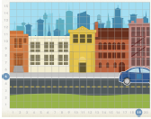
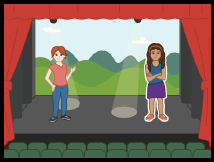
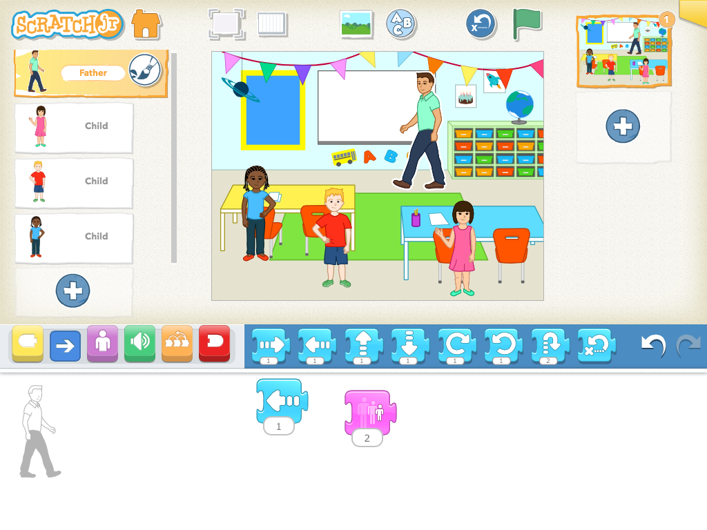
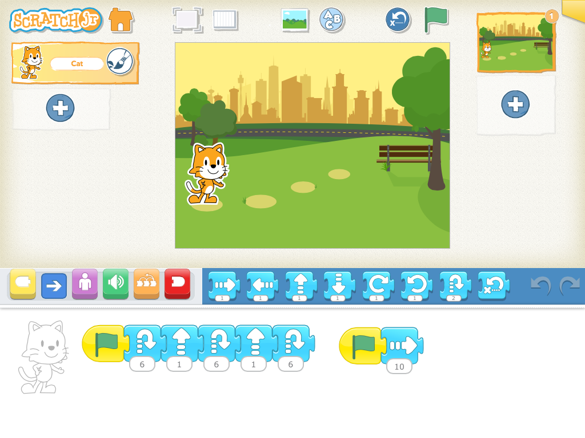

Activities
Each of these activities gives you a quick way to learn how to do new things with
ScratchJr. They are listed here in order of simplest to hardest, but feel free to play around in any order you'd like!
1 Drive Across the City

Pick a background and a character, and use a motion block to make a car drive across the city... Read more


7 Dance Party

Use sound and motion blocks and a start again block to make characters dance... Read more

9 Conversation

Send multiple messages among characters using different colored envelopes... Read more
Curricula
These curricula introduce powerful ideas from computer science that are not usually highlighted in early childhood education. We use the term "powerful idea" to mean a concept that children can learn and that will serve their critical thinking and problem
solving abilities beyond the lifetime of a specific classroom technology. While these curricula were designed as tools for teaching ScratchJr, the ultimate goal is to equip students with skills that can be applied outside of the app. Abilities
like programming, expressing through technology, and user-centered design are just a few of the powerful ideas covered in our lessons.
Printable Block Images

You can print high quality images of the ScratchJr blocks for classroom instruction... Download PDF
Animated Genres Curriculum

This curriculum provides students with the opportunity to learn all of the concepts in ScratchJr and apply these concepts in their own personal creations. At the heart of the curriculum are three types of interactive projects that can be made with ScratchJr...
Read more
Playground Games Curriculum

In the eight lessons of this curriculum, children learn how to use ScratchJr as they re-create familiar playground games. ... Read more
Reinforcing Literacy and Math Curriculum

These curricular modules describe ScratchJr projects that reinforce literacy and math standards. They could serve as games programmed by older ScratchJr students to be played by younger ScratchJr students... Read more
Assessments
These assessments provide two different ways to help determine the depth of students' understanding of the relationship between the programming blocks and their associated behaviors. Both assessments use the same basic ScratchJr examples.
Circle-the-Blocks Assessment

In this basic assessment, students identify which programming blocks were used in a given ScratchJr project, but the students do not sequence the blocks... Read more
Reverse-Engineering Assessment

In this more in-depth assessment, students view a ScratchJr project and then reconstruct the scripts of the project using pre-printed blocks... Read more
ScratchJr Cards
Reinforcing Literacy and Math Curriculum
These curricular modules describe ScratchJr projects that reinforce literacy and math standards.
Uppercase and Lowercase Letters - Part 1
This project reinforces a student's knowledge of writing and recognizing uppercase and lowercase letters... Read more
Uppercase and Lowercase Letters - Part 2

This project builds on Part 1 by adding the concept of messaging to connect an uppercase letter with its lowercase counterpart... Read more
Counting and Cardinality

This project reinforces a student's knowledge of counting and cardinality... Read more
Playground Curriculum
This curriculum provides an introduction to ScratchJr by re-creating familiar children's games using the ScratchJr characters and programming blocks. [Download all lessons as one file]
Lesson 1: Explore the Playground

Use the movement blocks to make the cat travel to all four corners of the ScratchJr stage, and use the reset button to return the cat to its starting position ... Read more
Lesson 2: Playground Acrobatics

Learn how to use the "Start on Green Flag" block, and see what you can do with two scripts that run simultaneously... Read more

Lesson 4: Dance the Hokey Pokey

Record your own voice, and use the Sound, Speed, and Wait blocks... Read more


Lesson 8: Free Choice

Learn how to use Paint Editor to make your own characters and backgrounds... Read more
Animated Genres Curriculum
Module 1 - Making a ScratchJr Collage
In this module, students learn how to navigate around the ScratchJr iPad app, and they learn simple programming commands that will animate their characters. At the end of the module, students will create a ScratchJr collage project.
Lesson 1 - Instructions, Sequencing, and an Introduction to the ScratchJr iPad App
Lesson 2 - Same Block Sequencing and Motion
Lesson 3 - Start on Green Flag Block, End Block, and Choosing Characters
Lesson 4 - Backgrounds and Review of Programming Multiple Characters
Collage Project
Lesson 1 - Instructions, Sequencing, and an Introduction to the ScratchJr iPad App
Lesson 2 - Same Block Sequencing and Motion
Lesson 3 - Start on Green Flag Block, End Block, and Choosing Characters
Lesson 4 - Backgrounds and Review of Programming Multiple Characters
Collage Project
Module 2 - Making a ScratchJr Story
In this module, students learn how to define more specific behavior for their characters, and they use tools such as speech bubbles and pages to help them weave a narrative. At the end of the module, students will create a ScratchJr story project.
Lesson 5 - Speed
Lesson 6 - Numbers and Repeating Sentences
Lesson 7 - Speech Bubbles, Sounds, Pages and Wait
Story Project
Lesson 5 - Speed
Lesson 6 - Numbers and Repeating Sentences
Lesson 7 - Speech Bubbles, Sounds, Pages and Wait
Story Project
Module 3 - Making a ScratchJr Game
In this module, students learn more advanced concepts in ScratchJr. Most importantly, they discover how to program characters that interact with each other and with the iPad user. At the end of the module, students will create a ScratchJr game project.
Lesson 8 - Start on Bump, Start on Tap, Send and Receive Messages, Stop
Game Project
Lesson 8 - Start on Bump, Start on Tap, Send and Receive Messages, Stop
Game Project